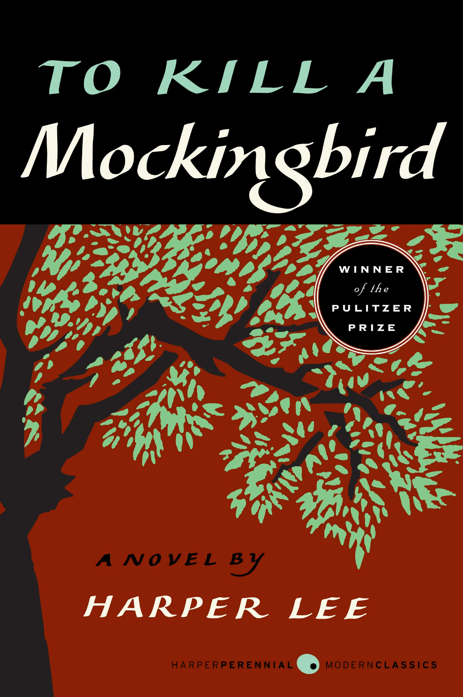

Harry Potter and the Sorcerer’s Stone
by J.K. Rowling
A quirky, calm beginning before the magical chaos begins.
Letter from Birmingham Jail
by Martin Luther King Jr. (1963)
A powerful defense of nonviolent protest against racial injustice... highlights the urgency of social change.

The Little Prince
by Antoine de Saint-Exupéry
Begins with childhood wonder and imagination that sets the tone.

The Case for Reparations
Ta-Nehisi Coates (The Atlantic, 2014)
This article dives into the historical and present-day consequences of slavery and systemic racism in the US...

To Kill a Mockingbird
To Kill a Mockingbird
by Harper Lee
A reflective start that hints at past events full of lessons.
Self-Reliance
Ralph Waldo Emerson (1841)
A timeless essay on the value of individualism, independence... a foundational work in American literature.